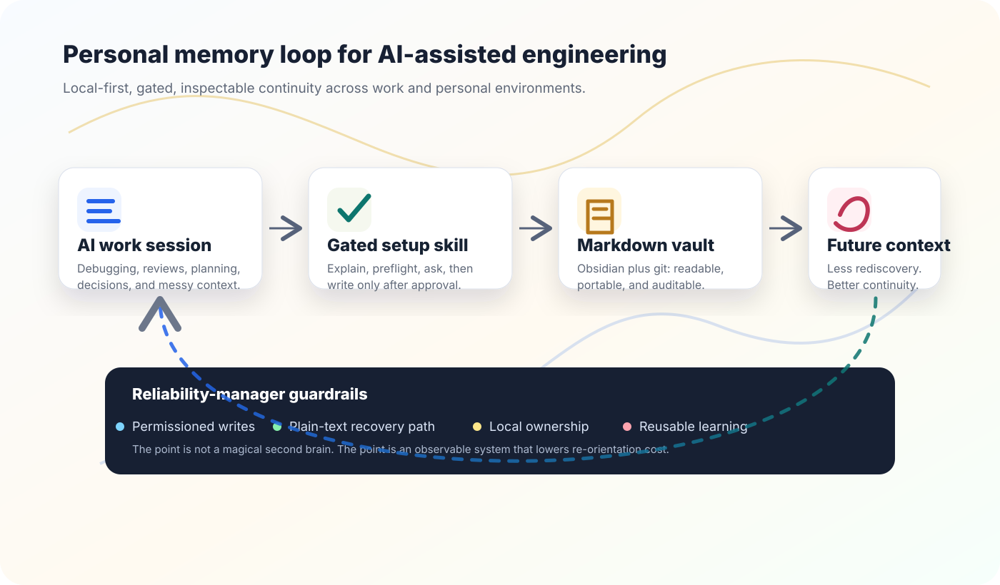

After an incident, the fix is rarely enough. Someone has to preserve the lesson in a way the next responder can actually use.
That same pattern shows up in AI-assisted work. A session can be productive and still leave almost no durable residue. The assistant helped debug a strange failure, compare trade-offs, draft a review, or clarify a decision. Then the session ends. A week later, I remember that we figured it out, but not the exact shape of the answer.
That is fine for a throwaway task. It is expensive for real work. It is especially expensive for managers, because a lot of the job is continuity: what changed, why it changed, who needs context, what risk is still open, and which lesson should survive the week.
Why I built it
I wanted a memory system that behaves like infrastructure I would trust: local-first, inspectable, reversible, and explicit about writes. I did not want an opaque memory feature that quietly shaped future sessions. I wanted plain Markdown, git history, and a setup flow that asks before touching dotfiles.
The result is a public plugin called memory. Its main skill, /memory:memory-setup, scaffolds a git-backed Obsidian vault, installs the useful Obsidian pieces, and wires session capture into Claude Code. The repo also includes compatibility notes and importers for Codex and Antigravity, because the useful context should belong to the person doing the work, not to one assistant vendor.
I have used this pattern in both work environments and personal environments. At work, it helps with incident follow-ups, architecture reviews, on-call handoffs, vendor decisions, team preferences, and the small operational facts that otherwise get rediscovered every month. Personally, it helps with coaching notes, side projects, routines, reading trails, and decisions I keep revisiting.
Work memory
- Incident context and postmortem follow-ups
- On-call handoffs and production-risk notes
- Architecture decisions and review patterns
- Team conventions that should not live only in chat
Personal memory
- Coaching reflections and recurring themes
- Personal projects and unfinished threads
- Learning notes from AI, systems, and leadership
- Habits, routines, and decisions worth revisiting

Why this feels like SRE work
Reliability is not just uptime. It is the discipline of making systems understandable when the easy context is gone. Good runbooks, dashboards, postmortems, deploy notes, and handoffs all do the same thing: they reduce time-to-orientation when the next person needs to act.
AI work needs some of that discipline. Agents are fast, but speed can hide context loss. If the assistant helps me reason through a tricky production question and the output never becomes durable, the organization learned less than it could have. If a coaching session surfaces a repeated pattern and I never capture it, I am asking future-me to do the same discovery again.
So I built the skill with reliability-manager guardrails. It explains the trade-off first. It runs read-only preflight checks. It asks for the vault name, location, and remote. It backs up settings before editing. It makes the managed block visible. It keeps the recovery path boring.
Influences: visible machinery
I have been drawn to Andrej Karpathy's teaching style because it favors small systems you can inspect. Neural Networks: Zero to Hero teaches neural networks from scratch in code. micrograd makes backpropagation small enough to hold in your head. nanoGPT and llm.c make serious model machinery feel more legible. I like that posture: build enough of the thing end to end that you can reason about it without mythology.
This memory skill is not trying to build an LLM. It borrows that operating principle: make the important machinery visible enough that you can debug it, trust it, and change it.
The practical test: if this is working, a future session should need less preamble, fewer repeated explanations, and fewer “wait, where did we decide that?” moments.
Try it, inspect it, adapt it
I published the memory plugin as a small, readable starting point for anyone who wants local AI-session memory without adopting a whole knowledge-management framework.
The important pieces are plain files: Markdown templates, Python scripts, and explicit setup steps. Read the README, inspect the writes, and change the workflow until it fits your own environment.
What I want from it
I want future sessions to start with better orientation. I want decisions to have a place to land. I want patterns from work and life to become easier to see across time. And I want the memory layer to remain mine: plain files, local defaults, clear writes, and enough structure to be useful without becoming ceremony.
That is the practical reason. The leadership reason is simpler: if AI is becoming part of how I think, build, and manage, I do not want the context layer to be accidental.